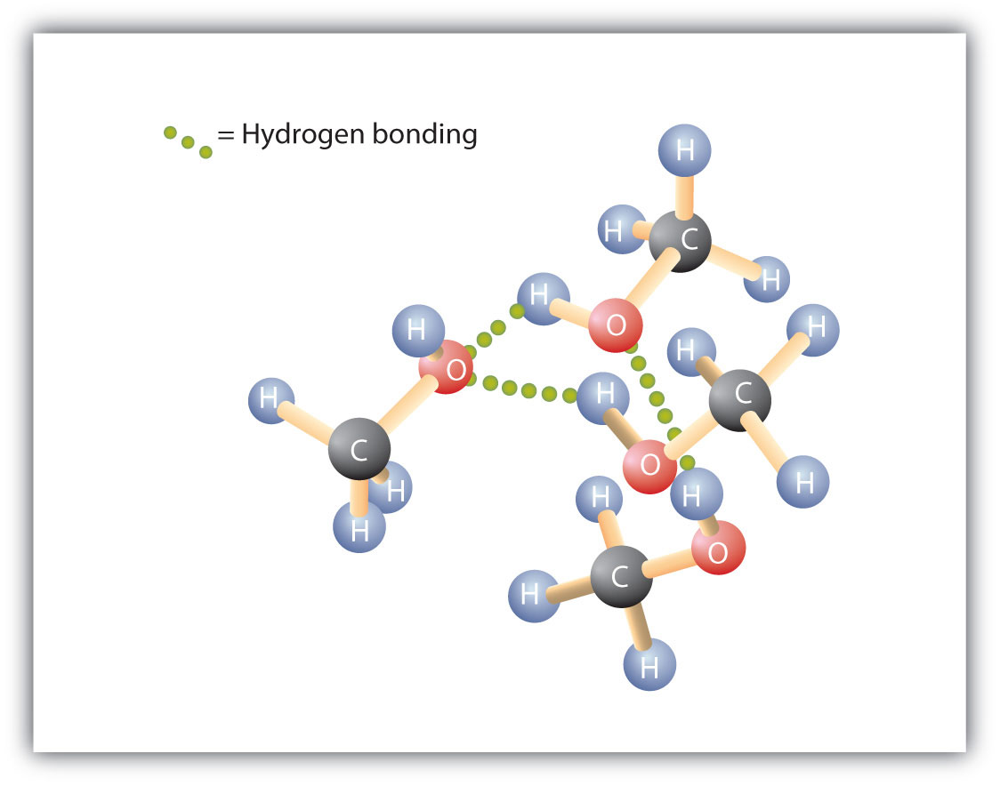
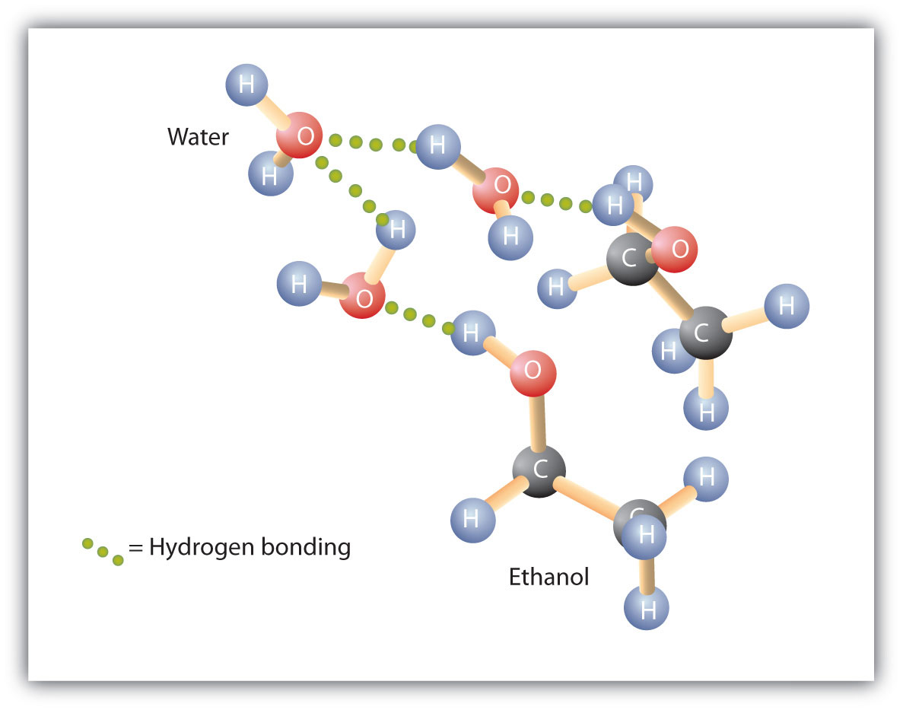

Alcohols can be considered derivatives of water (H2O; also written as HOH).
Like the H–O–H bond in water, the R–O–H bond is bent, and alcohol molecules are polar. This relationship is particularly apparent in small molecules and reflected in the physical and chemical properties of alcohols with low molar mass.
Replacing a hydrogen atom from an alkane with an OH group allows the molecules to associate through hydrogen bonding (Figure 14.2 "Intermolecular Hydrogen Bonding in Methanol"). Recall from Chapter 8 "Solids, Liquids, and Gases" that physical properties are determined to a large extent by the type of intermolecular forces. Table 14.3 "Comparison of Boiling Points and Molar Masses" lists the molar masses and the boiling points of some common compounds. The table shows that substances with similar molar masses can have quite different boiling points. Alkanes are nonpolar and are thus associated only through relatively weak dispersion forces. Alkanes with one to four carbon atoms are gases at room temperature. In contrast, even methanol (with one carbon atom) is a liquid at room temperature. Hydrogen bonding greatly increases the boiling points of alcohols compared to hydrocarbons of comparable molar mass. The boiling point is a rough measure of the amount of energy necessary to separate a liquid molecule from its nearest neighbors. If the molecules interact through hydrogen bonding, a relatively large quantity of energy must be supplied to break those intermolecular attractions. Only then can the molecule escape from the liquid into the gaseous state.
Figure 14.2 Intermolecular Hydrogen Bonding in Methanol
The OH groups of alcohol molecules make hydrogen bonding possible.
Table 14.3 Comparison of Boiling Points and Molar Masses
| Formula | Name | Molar Mass | Boiling Point (°C) |
|---|---|---|---|
| CH4 | methane | 16 | –164 |
| HOH | water | 18 | 100 |
| C2H6 | ethane | 30 | –89 |
| CH3OH | methanol | 32 | 65 |
| C3H8 | propane | 44 | –42 |
| CH3CH2OH | ethanol | 46 | 78 |
| C4H10 | butane | 58 | –1 |
| CH3CH2CH2OH | 1-propanol | 60 | 97 |
Alcohols can also engage in hydrogen bonding with water molecules (Figure 14.3 "Hydrogen Bonding between Methanol Molecules and Water Molecules"). Thus, whereas the hydrocarbons are insoluble in water, alcohols with one to three carbon atoms are completely soluble. As the length of the chain increases, however, the solubility of alcohols in water decreases; the molecules become more like hydrocarbons and less like water. The alcohol 1-decanol (CH3CH2CH2CH2CH2CH2CH2CH2CH2CH2OH) is essentially insoluble in water. We frequently find that the borderline of solubility in a family of organic compounds occurs at four or five carbon atoms.
Figure 14.3 Hydrogen Bonding between Methanol Molecules and Water Molecules
Hydrogen bonding between the OH of methanol and water molecules accounts for the solubility of methanol in water.
Why is ethanol more soluble in water than 1-hexanol?
Why does 1-butanol have a lower boiling point than 1-hexanol?
Ethanol has an OH group and only 2 carbon atoms; 1-hexanol has one OH group for 6 carbon atoms and is thus more like a (nonpolar) hydrocarbon than ethanol is.
The molar mass of 1-hexanol is greater than that of 1-butanol.
Answer the following exercises without consulting tables in the text.
Arrange these alcohols in order of increasing boiling point: ethanol, methanol, and 1-propanol.
Which has the higher boiling point—butane or 1-propanol?
Arrange these alcohols in order of increasing solubility in water: 1-butanol, methanol, and 1-octanol.
Arrange these compounds in order of increasing solubility in water: 1-butanol, ethanol, and pentane.
methanol < ethanol < 1-propanol
1-octanol < 1-butanol < methanol